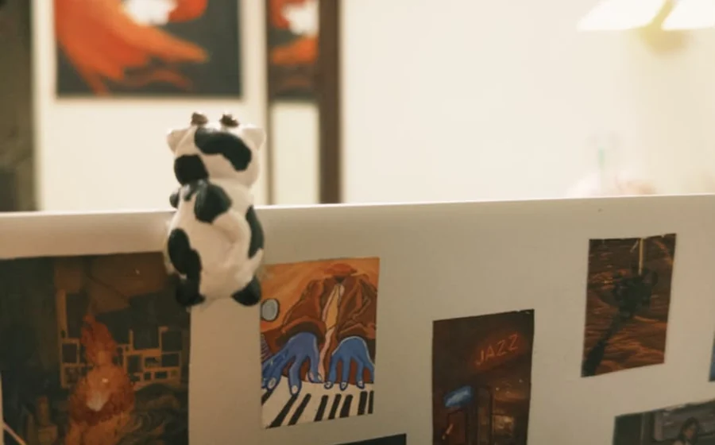
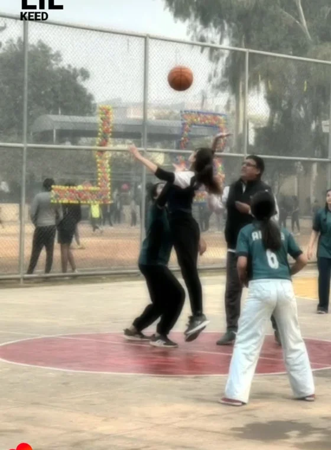
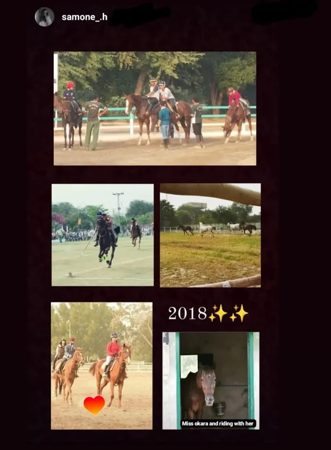

SAVE 01
Islamabad House Price Prediction
Machine-learning work focused on learning how property features and location relate to house prices in Islamabad.
Machine LearningRegressionEDAPython
FIZZA PRESENTS
AI / DATA / SOFTWARE / ART / SIDE QUESTS
WASD not required · curiosity recommended

Documents into answers. Data into decisions. Ideas into interfaces. Blank canvases into something worth keeping.
Main quest: AI & Data Science.
Everything else — backend, databases, algorithms, C++, visual design, leadership, painting, pottery, sport — is part of how I learned to build things with more range.
I like the part where the idea becomes real.
CLASSDATA SCIENCE STUDENT
BUILD TYPEAI-FIRST / ENGINEERING-BACKED
ACTIVE QUESTSRAG · ML · DATA ANALYSIS
SIDE QUESTSART · POTTERY · SPORT · DEBATE
I’m interested in what happens before and after generation: ingestion, retrieval, evaluation, storage, grounding, latency, interfaces, and whether the answer can actually be trusted.
Vector storage and approximate nearest-neighbor search turn embeddings into usable retrieval instead of a very expensive pile of numbers.
[OK] pgvector connected\n[OK] HNSW index online\n[OK] cosine search ready
Built the whole path, not just the chat box.
Two newer projects push the portfolio deeper into prediction, analysis, visualization, and behavioral patterns — exactly where I want the next part of my work to grow.
Machine-learning work focused on learning how property features and location relate to house prices in Islamabad.
A data-analysis project exploring player performance and behavioral patterns through the lens of game telemetry and measurable outcomes.
No endless card wall. Pick a discipline and the map redraws around the kind of work you care about.
I’d rather show where a tool lives in my work than turn the page into a wall of logos.
NEW COURSE PACK // currently loaded
Painting, pottery, sport, debate, design, and engineering don’t feel like separate personalities to me. They’re different ways of observing, experimenting, practicing, and making something intentional.
My main direction is AI & Data Science, but the way I think has always been mixed: analytical enough to enjoy systems, visual enough to care how they feel, competitive enough to love sport, and curious enough to keep picking up new side quests.


PROGRAMBS Data Science
UNIVERSITYFAST-NUCES Islamabad
EXPECTED GRADUATION2028
PROGRESS4 semesters completed · 74 credit hours
RECOGNITIONDean’s Honor List — Spring 2025 & Spring 2026
CURRENT DIRECTIONAI / ML · Data Science · intelligent systems
Acrylic mini canvas
Small format, close observation, and the kind of thing I make because I feel like making it.
I’ve moved through data, software, teaching, design, marketing, technical societies, community work, and creative roles. The useful part is what each one taught me to carry into the next.
Projects, marketing, content, and leadership roles.
Head — Data Detective · Officer — Edathon.
Member · IEEE Computer Society · IEEE Islamabad Chapter.
Member at FAST-NUCES.
Business & Economics Society, MUN, sports events, student council, and more.